Cuidados importantesRemédio sem receita também é remédio. Antes de tomar qualquer um, vale conhecer algumas regras básicas.
Entenda as tarjas da caixa
| Tarja | O que significa |
|---|---|
| Sem tarja | Remédio isento de prescrição (MIP). Pode ser comprado sem receita. |
| Tarja vermelha | Precisa de receita médica. Em alguns casos, como nos antibióticos, a farmácia fica com a receita. |
| Tarja preta | Remédio controlado, que age no sistema nervoso. Precisa de uma receita especial, que fica retida na farmácia. |
Antes de tomar
- Leia a bula, principalmente as partes "quando não devo usar" e "como devo usar".
- Respeite a dose e o intervalo entre as doses.
- Confira a validade e se a embalagem está lacrada.
- Converse com o farmacêutico: a orientação é gratuita.
Quem precisa de mais cuidado
Mesmo com remédios sem receita, peça orientação a um médico ou farmacêutico antes de usar em:
- Grávidas e mulheres que estão amamentando.
- Bebês e crianças (a dose depende do peso).
- Idosos.
- Pessoas com pressão alta, diabetes ou problemas no fígado ou nos rins.
- Quem já toma outros remédios todos os dias.
Como guardar os remédios
- Em lugar seco, fresco e longe do sol (evite o banheiro e a cozinha).
- Longe do alcance de crianças e animais.
- Na embalagem original, junto com a bula.
- Remédio vencido não vai no lixo comum nem na pia: muitas farmácias têm pontos de coleta.
Telefones úteis
- 192 - SAMU, para emergências médicas.
- 0800 722 6001 - Disque-Intoxicação da Anvisa, ligação gratuita, para quando alguém toma remédio demais ou por engano.
Fontes: Anvisa (lista de MIPs e Disque-Intoxicação) e bulas dos medicamentos.